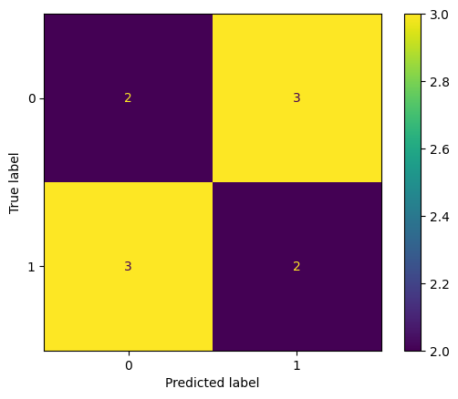

import pandas as pd
from sklearn.metrics import classification_report, ConfusionMatrixDisplay
df = pd.DataFrame(
dict(
y=[0, 0, 1, 1, 1, 0, 1, 1, 0, 0],
y_pred=[1, 1, 0, 0, 0, 1, 1, 1, 0, 0],
)
)
print(classification_report(df.y, df.y_pred, digits=2))
ConfusionMatrixDisplay.from_predictions(df.y, df.y_pred) precision recall f1-score support
0 0.40 0.40 0.40 5
1 0.40 0.40 0.40 5
accuracy 0.40 10
macro avg 0.40 0.40 0.40 10
weighted avg 0.40 0.40 0.40 10
